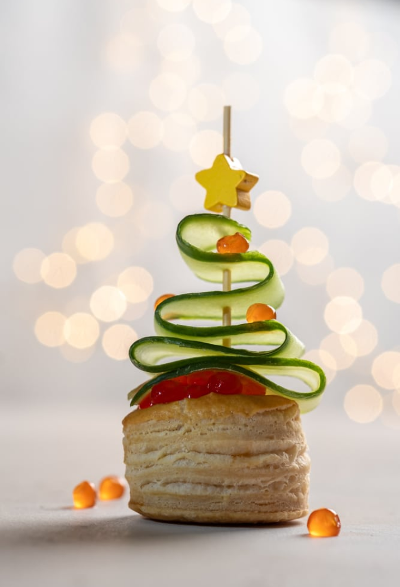

<div class="details">
  <div class="container">
    <div class="details__inner">
      <div class="details-image">
        
      </div>

      <div class="details-text">
        <div class="details-title">Валованы с рыбным муссом (мусс)</div>
        <div class="details-info">
          <div class="info-title">Состав</div>
          <div class="info-subtitle">
            Волован из слоеного теста, сливочный сыр, сельдь с/с, огурцы
            маринованные, кижуч с/с, шпроты
          </div>
        </div>
        <div class="details-info">
          <div class="info-title">Описание</div>
          <div class="info-subtitle">
            Этот круасан сделан из воздушного слоеного теста с добовлением
            охлажденной слабосоленой норвежской семги, листиков латука и сыра
            рикотто. Данный продукт лучше всего употреблять с бутылочкой Кьяньти
            1978 года...Ну и т.д.
          </div>
        </div>

        <div class="details-some">
          <div class="details-info">
            <div class="info-title">Масса</div>
            <div class="info-subtitle">375 гр / 15 шт</div>
          </div>
          <div class="details-info">
            <div class="info-title">Цена</div>
            <div class="info-subtitle">39 Br</div>
          </div>
        </div>
        <div class="details-controls">
          <a class="btn">Добавить в корзину</a>
          <a routerLink="/" class="secondary-btn">На главную</a>
        </div>
      </div>
    </div>
  </div>
</div>
